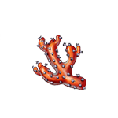
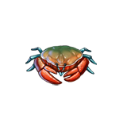
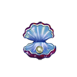
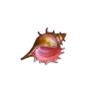
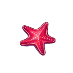

Получено: файл; исходный URL. Оригинальные байты, полученные по ссылке; идентичность архиву не подтверждена.
Морская коллекция
ВКонтакте; дата источника не указана- Тип
- Коллекции
- Версия и дата
- ВКонтакте; дата источника не указана
Элементы коллекции





Данные по источнику · ВКонтакте · дата источника не указана
Предварительно: один источник; требует сверки. Требуется сверка.
- Награда
- 2 чёрных мрамора и 10 000 монет
- Где копать
- Ракета, каменные и плюшевые буквы ЮРА, камни
- Состав (источник Zombie-island)
- Коралл; Краб; Жемчужница; Раковина; Звезда.
- Награда (источник Zombie-island)
- 2 Черный мрамор; 10000 Монеты.
- Где копать Морскую коллекцию в Зомби Ферме лопатами
- Ракета; Марафонец; Флаг Марафонца; Буква Ю; Буква Р; Буква А; Весенняя ваза 3; Весенняя ваза 2; Весенняя ваза 1.
- Морская коллекция попадается в ведрах Рыбаков, Яйцах и мешках Звездочетов
- Рыбак; Рыбак с мозгами; Бэйби-сюрприз; Звездочет; Звездочет за зомбаксы.
- Морская коллекция выпадает из ценностей и сокровищ игры Зомби Ферма
- Секретный клад; Сундук Чудовища 3; Большая бочка; Коллекционер 2; Ракушка розовая; Ракушка оранжевая; Осьминог; Морской ёжик; Морской конёк; Халявное; Весенний фонтан; День защиты детей; Праздничный презент; Смелый презент; Богатырский презент; Сюрприз.
- Морскую коллекцию можно выиграть в рулетке
- Бунгало.


Данные по источнику · браузерная версия; платформа в ответе не уточнена · Дата на странице (формат не уточнён): 10/04/2015
Предварительно: Ответ справочного сайта; достоверность и независимость от других фанатских источников не установлены. Возможны различия редакций и версии.. Требуется сверка.
- Ответ источника
- Морская коллекция Зомби Ферма может быть собрана любым игроком, желающим получить два блока мрамора черного цвета и 10 тысяч золотых монет. Ее можно откопать под множеством букв, в том числе под А, Ю, Р, ракетой, декорацией Марафонца и так далее. Также все 5 предметов коллекции: ракушку, коралл, жемчужину, звезду и краба могут принести рыбаки в своих ведрах и звездочеты в мешках, иногда они выпадают из яйца под названием Бэйби-сюрприз, большой бочки и секретного клада.
Данные по источнику · браузерная версия; платформа не указана · дата редакции не установлена
Предварительно: Содержимое списка: изображения и колонки могут терять смысл при извлечении текста; отдельная страница и дата не проверены. Подписи alt иногда ошибочны.. Требуется сверка.
- Текст карточки из каталога
- 2 Чёрных мрамора и 10000 монет Коралл Краб Жемчужница Раковина Звезда Где копать: Ракета, каменные буквы "ЮРА", плюшевые буквы "ЮРА", кусты, камни, деревья деревья
Данные по источнику · Мой Мир (Mail.ru); историческая таблица · дата редакции не установлена
Предварительно: Источник сам использует знаки вопроса; не следует считать такие места подтверждёнными. Возможны изменения патча и платформы; независимость от других справочников не доказана.. Требуется сверка.
- Название в источнике
- Морская коллекция
- Где копать
- Ракета, каменные буквы "ЮРА", плюшевые буквы "ЮРА", камни, деревья
- Награда
- 2 Чёрных мрамора и 10 000 монет
Данные по источнику · браузерная версия; на сайте указана игра ВКонтакте · дата редакции не установлена
Предварительно: Исторический текст; сильно совпадает со справкой Zommbie.at.ua, независимость не доказана. Отрицания и доступность могут измениться с патчем.. Требуется сверка.
- Где искать по странице «Зомбастики»
- Плюшевые и каменные буквы «А», «Р» и «Ю».
Данные по источнику · историческая социальная версия ВКонтакте; редакция неизвестна · дата последующей редакции неизвестна
Предварительно: Фанатская статья; актуальность, вероятности и независимость от других справочников не установлены.. Требуется сверка.
- Состав
- Коралл, Краб, Жемчужница, Раковина, Звезда.
- Обмен
- 2 Чёрных мрамора и 10 000 монет.
- Рулетки и задания
- Бунгало, Палатка горожан, Флаг Австралии, Пионерский пруд и пять вариантов Затонувшего корабля; задание «Подземная река».
- Другие находки
- Сундук, Бэйби-сюрприз, Губка-сюрприз, Сундук Чудовища, Морской ёжик, Морской конёк, цветные ракушки и другие ценности; также Рыбаки и Звездочёты.
- Палочки
- Октавий, Пончик-перевёртыш, Почта Любви.
- Лопаты у друзей
- Флаг Марафонца, Ракета, Мастер урожая, Марафонец, Весенняя ваза, Секретный клад.
- Применение
- Строительство Яхты, создание «Цветного» и названные в статье задания; количество не указано.
Данные по источнику · историческая браузерная версия, платформа не указана · 10.01.2014 — дата в каталоге; дата редакции материала неизвестна
Предварительно: Фанатский список без вероятностей и уточнения площадки; независимость от других источников не установлена.. Требуется сверка.
- Где искать по списку сайта
- Плюшевые и каменные буквы "А", "Р" и "Ю"
- Оговорка
- Список может относиться к разным условиям, инструментам и периодам игры; не доказывает гарантированное выпадение. Заявления «только» и «невозможно» относятся лишь к времени и версии источника.
Данные по источнику · историческая браузерная игра; площадка не уточнена · 26.02.2013 — дата каталога; редакция неизвестна
Предварительно: Проверен текст в каталоге сайта; вероятность выпадения не указана. Исторические версии и даты могут различаться; списки и награды требуют сверки, независимость сайта от других справочников не установлена.. Требуется сверка.
- Награда в источнике
- 2 чёрных мрамора и 10 000 монет
- Места в источнике
- Ракета, каменные и плюшевые буквы Ю, Р, А; кусты, камни и деревья.
Связанные сущности
нет проверенных связей — требуется сверка.
Источники
- прочитано; проверка 2026-11-21
- прочитано: Zombie-island.moy.su; проверка 2026-11-21
- FatalGame: прочитан отдельный ответ; дата на странице 10/04/2015
- ZOMBIA: прочитана карточка в списке
- Ссылка на отдельную страницу; отдельно не проверена
- Zombiemail: строка таблицы коллекций; Мой Мир
- Зомбастики: прочитана соответствующая строка; возможная копия другого справочника
- ViveR_9: прочитанная статья коллекции
- zommbie.at.ua: где искать коллекции
- zombi-ferma.ucoz.net: каталог коллекций